Photos
Pictures from the book
All 46 pictures printed in the 1985 book and its 1986 supplement: 32 photographs, grouped by the book’s chapters, then 14 maps, documents and drawings. Captions are the book’s own. 26 pictures link to the pages of the people in them.
The Kastls: from Bohemia to America

Joseph Kastl log house built 1868.
People: Josef Kastl
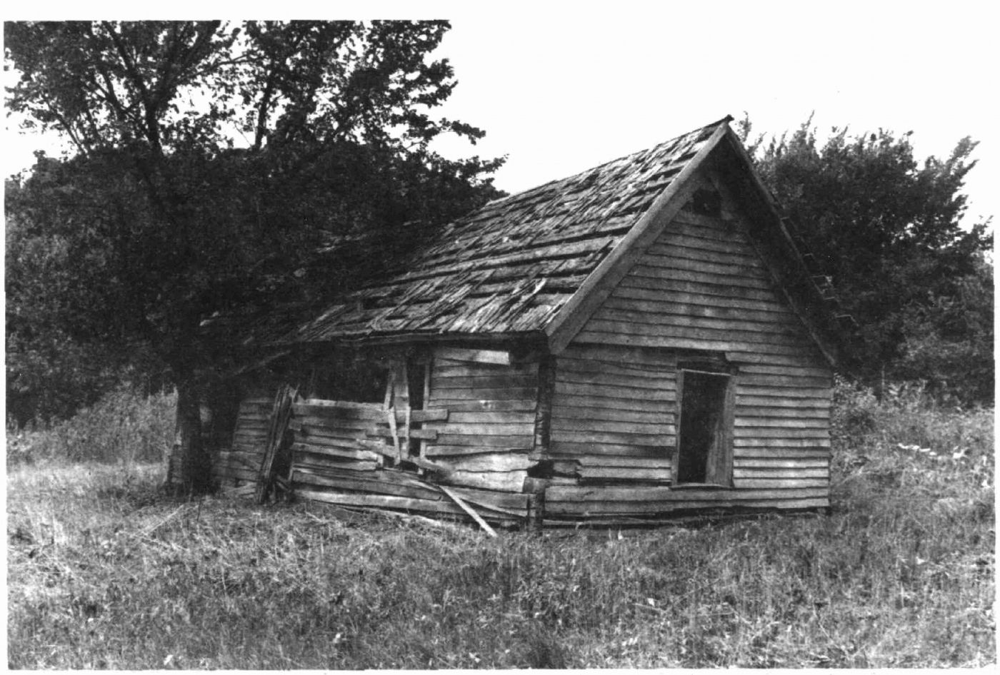
Joseph Kastl log house built 1868 — new siding put on at a later date.
People: Josef Kastl

The Family of Peter Kastl

Peter Kastl and Anna Frohner
People: Peter Kastl, Anna Frohner

Sons of Peter: Seated L to R are Joseph and Frank. Standing L to R — Joseph Sedlacek (cousin), Thomas and Charles.
People: Joseph Kastl, Thomas J. Kastl, Charles Anton Kastl, Frank Kastl
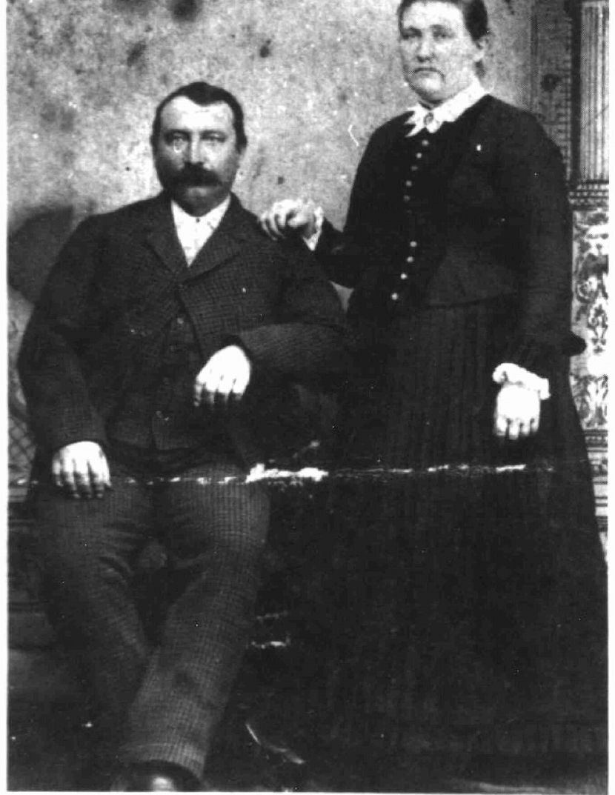
Anna Kastl and Joseph Sedlacek
People: Anna Kastl, Joseph Sedlacek

Marie Kastl, daughter of Peter Joseph Cuda Hanford, California — 1887
People: Mary Kastl, Joseph Cuda
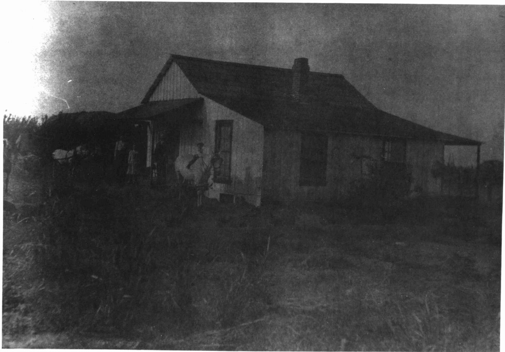
Joseph C. Kastl Ranch — 1902, Arvin, California

An 1896 rabbit drive was one of many controlled measures needed in the Weedpatch area to keep the population down on the furry fleet-footed hares. H. S. Knight, pictured here in the right foreground along with his son. Errol, was forced to fence 160—acre homestead with rabbit wire to keep the animals out of his wheat field.

Filomina Kastl Fujan daughter of Peter Kastl.
People: Philomena Kastl

Charles Kastl — Barbara Kasper 1895
People: Charles Anton Kastl, Barbara Ann Kaspar

1892 — Store in Malmo, Nebraska. Charles, Thomas, and Joseph sons of Peter.
People: Joseph Kastl, Thomas J. Kastl, Charles Anton Kastl

Frequently the settler's first home on the prairie was a dugout. (Photo from Nebraska—A Pictorial History)
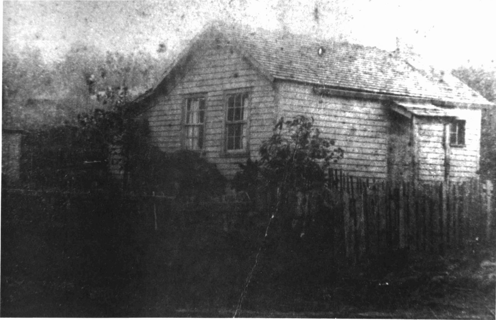
1873 — 14th & Pacific Street, Omaha, Nebraska. Wenzel Kastl and son Jim.
People: Wenzel Kastl


The Family of Wenzel Kastl

Wenzel Kastl
People: Wenzel Kastl
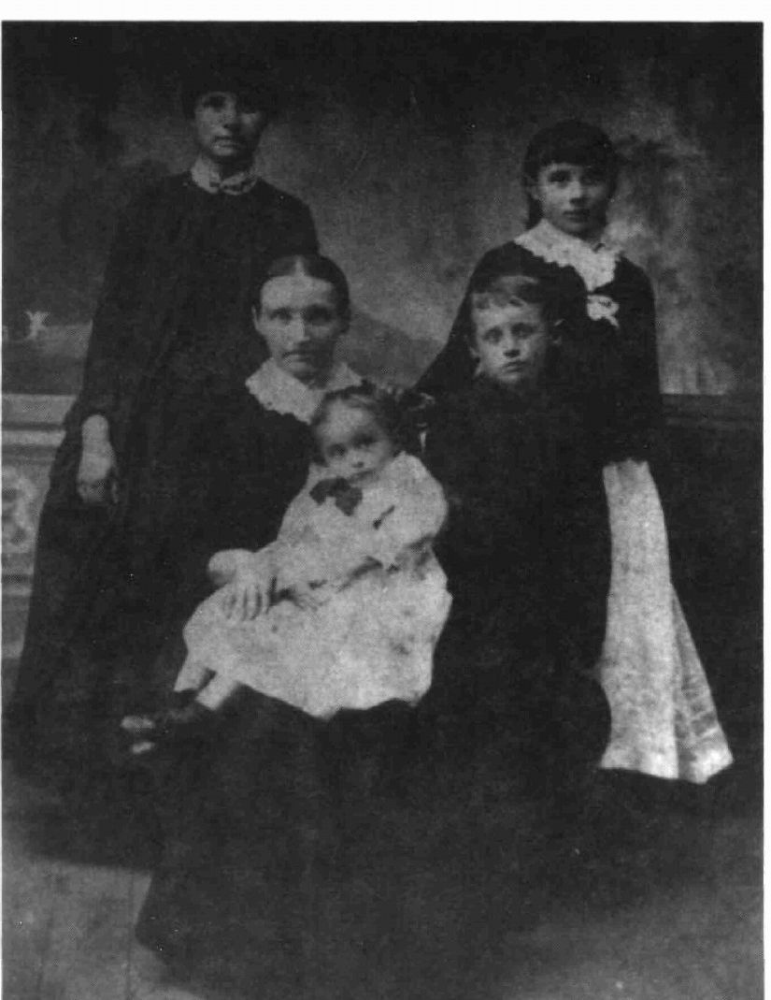
Family of Wenzel Kastl Mary, Anna,Wenzel,Wilhelmina
People: Wenzel Kastl, Mary Agnes Kastl, Anna Kastl, Wenzel Kastl, Jr., Wilhelmina Kastl
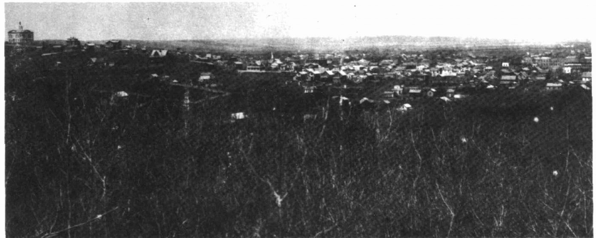
This was Omaha in 1867. The city, which had long cherished the hope of becoming the state capital, lost its bid when the south-of-Platte legislators voted the straight sectional ticket. The building at the extreme left was the second teritorial capitol building. (Photo from Nebraska—A Pictorial History)


The Family of John Kastl

John Kastl
People: John Kastl

Marie Kunes Kastl
People: Marie Kunes
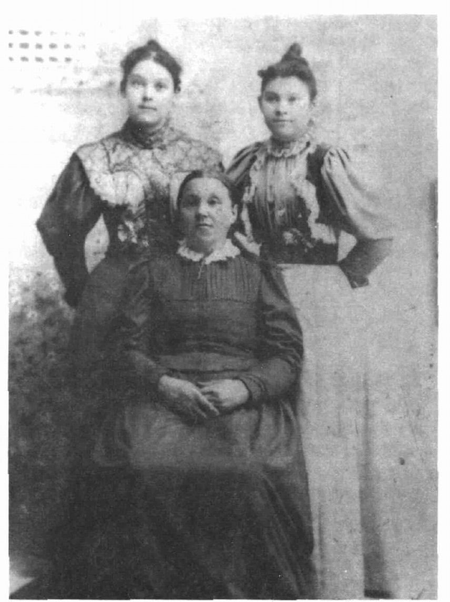
Marie Kunes Kastl, Cecelia Kastl Koncana, and Mary Kastl Slegel
People: Cecelia Kastl, Mary Kastl, Marie Kunes

Children of John Kastl: Joseph, Thomas, Elizabeth, John, Cecelia, and Mary.
People: Joseph Kastl, Thomas Kastl, Elizabeth Kastl, Cecelia Kastl, Mary Kastl, John Kastl

Vaclav Kastl—1864-1932 (Son of John Kastl)
People: Vaclav Kastl
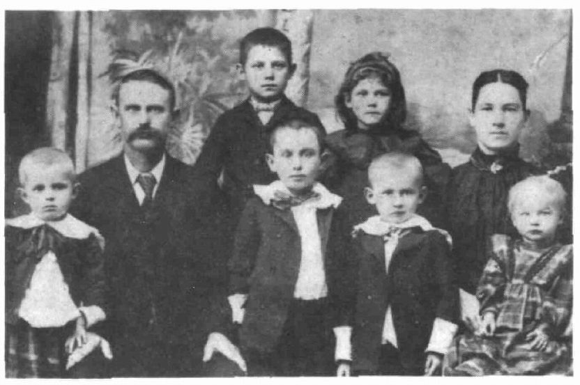
Frank Mares and Anna Kastl, Louis, Albert, Frank, Barbara, James, and Fred.
People: Anna Kastl, Albert John Mares, Frank Charles Mares, Barbara Frances Mares, James Samuel Mares, Louis Emanuel Mares, Fred John Mares, Frank Mares


The Family of Joseph Kastl

Joseph Kastl and Dorota Blaha
People: Josef Kastl, Dorota Blaha

Joseph Kastl — Frances Fixa Family. Edward, Frances, Sophia, Joseph, Frank, John, and Stanley.
People: Joseph Kastl, Frank Kastl, Sophie Kastl, Edward Kastl, John R. Kastl, Stanley Kastl, Frances Fixa

Mary Kastl — John Shalon (Thomas and Anna)
People: Mary Kastl, Thomas Shalon, Anna Shalon, John F. Shalon

First livery stable and yard at Plasi. (Photo from Sts. Cyril & Methodius—Centennial Book, Plasi, Nebraska.
The Family of Jacob Kastl

Jacob Kastl Family — Front Row—L to R: Edward, Jacob, Antonia, Alzbeta, Elizabeth. Back Row—L toR: Frank, Anton, John, Vince, and Jacob.
People: Jacob Kastl, John Joseph Kastl, Vincent Kastl, Jacob Kastl, Frank Kastl, Anton Peter Kastl, Edward Kastl, Elizabeth Kastl, Antonia Kastl, Alzbeta Nemecek
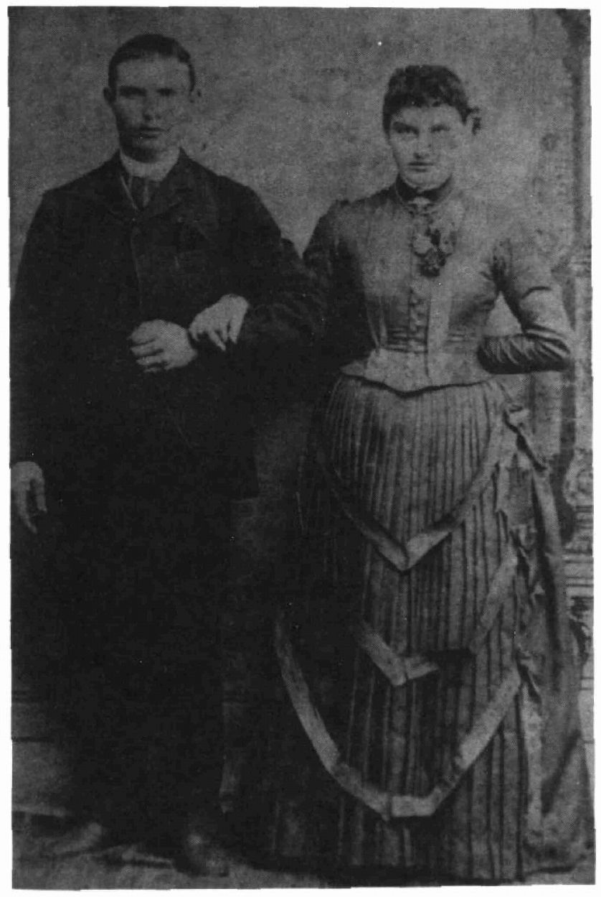
Vaclav A. Dobry — Mary Barbara Kastl
People: Mary Barbara Kastl, Vaclav A. Dobry

John J. Kastl — Frances Policky Albin, Jim, Rose, and John
People: John Joseph Kastl, James Charles Kastl, Rose Mary Kastl, Albin Joseph Kastl, John Francis Kastl, Frances Marie Policky

The Family of Thomas Kastl

Thomas Kastl Family — Taken about 1898
People: Thomas Kastl
The Family of Andrew Kastl

Andrew Kastl family / Top—Mary, Rose, Frances, Barbara. Bottom—Andrew, John, Barbara, Agnes, Emma, and Anna.
People: Andrew Kastl, Anna Kastl, Mary Kastl, Barbara Elizabeth Kastl, Rose Kastl, Frances Kastl, John Kastl, Emma Kastl, Agnes Kastl, Barbara Valecka
Back matter
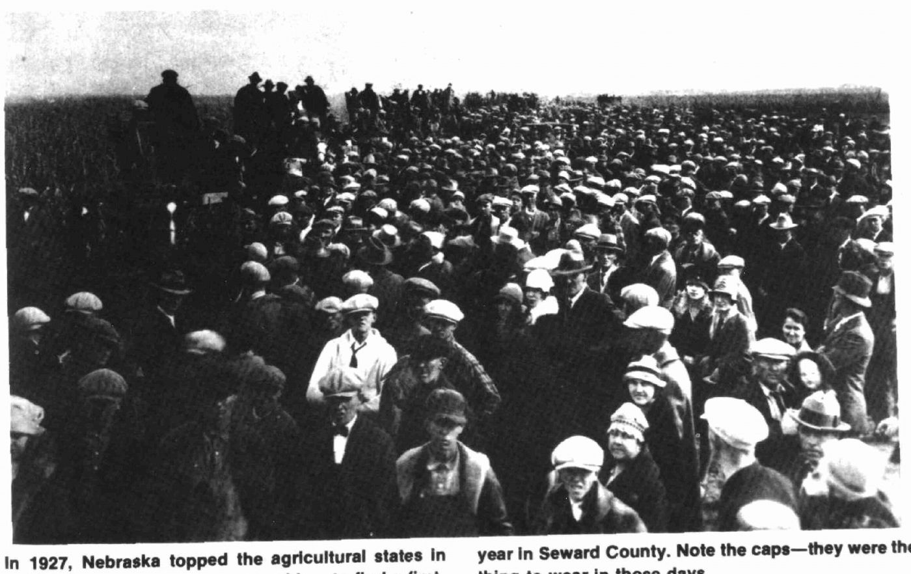
In 1927, Nebraska topped the agricultural states in crop production, so it was no problem to find a first-rate field for the annual cornhusking contest, held that year in Seward County. Note the caps—they were the thing to wear in those days. (Photo from Nebraska—A Pictoral History)

Maps, documents and drawings
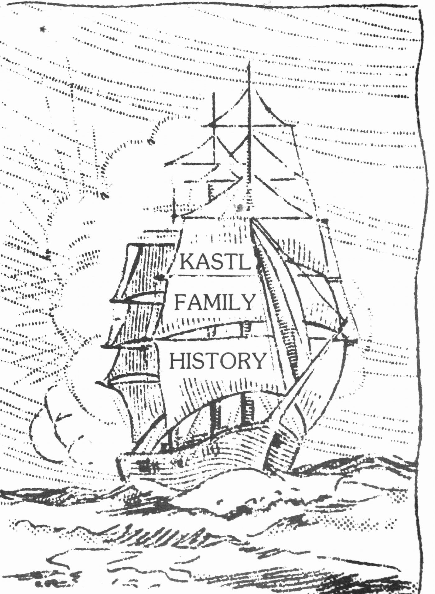
Not captioned in the book.
Full-page pen-and-ink illustration of a three-masted sailing ship on rough seas, with dotted sky rays and clouds; the title is lettered on the ship's sails.

Not captioned in the book.
What it shows
Printed map titled 'CZECHOSLOVAKIA' (inset legend: Statute Miles scale, Capitals symbol; 'Published by G. & C. Merriam Company, Springfield, Mass.; Prepared by J. W. Clement Co., Buffalo, N.Y.'). Shows Bohemia, Moravia, Slovakia and Ruthenia between Germany, Poland, U.S.S.R. (Ukraine), Romania, Hungary and Austria; towns marked include Plzen (Pilsen), Prague (Praha), Klatovy, Pisek, Ceske Budejovice, Brno, Olomouc, Bratislava, Kosice, Vienna, Linz, Munich, Nurnberg, Dresden, Wroclaw, Krakow.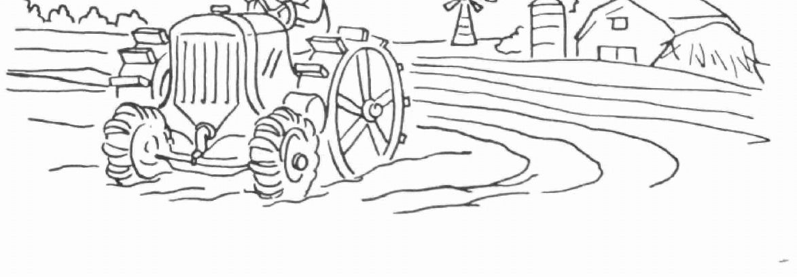
Not captioned in the book.
What it shows
Line drawing of a smiling farmer in a hat driving an old steel-wheeled tractor across a curving plowed field, with a windmill, silo, barn and trees in the background.![Full-page reproduction of a sheet of the German 'Generalkarte von Mitteleuropa 1:200 000 mit Strassenaufdruck' (sheet heading '31° 49° PAS', '31°50° PILSEN'; border labelled TSCHECHOSLOWAKEI). Shows the Domazlice-Kdyne-Klatovy region of southwest Bohemia down to the Bavarian border (Furth i. W., Kotzting, Eisenstein/Zelezna Ruda). Several villages are circled by hand in ink, most heavily Vsepadly ('Vsepadly' printed as 'Všepadly') and Uboc (Úboč), and Kdyne (Neugedein); lighter ovals around Hradiste (Hrádiště, north of Vsepadly), Trnci, Prapořiště, Desenice, and a box around Klatovy.](../media/photos/s008-ph1.jpg)
Not captioned in the book.
What it shows
Full-page reproduction of a sheet of the German 'Generalkarte von Mitteleuropa 1:200 000 mit Strassenaufdruck' (sheet heading '31° 49° PAS', '31°50° PILSEN'; border labelled TSCHECHOSLOWAKEI). Shows the Domazlice-Kdyne-Klatovy region of southwest Bohemia down to the Bavarian border (Furth i. W., Kotzting, Eisenstein/Zelezna Ruda). Several villages are circled by hand in ink, most heavily Vsepadly ('Vsepadly' printed as 'Všepadly') and Uboc (Úboč), and Kdyne (Neugedein); lighter ovals around Hradiste (Hrádiště, north of Vsepadly), Trnci, Prapořiště, Desenice, and a box around Klatovy.
Not captioned in the book.
Decorative line drawing of a stagecoach pulled by four galloping horses with two figures on the driver's seat.
![Full-page photocopy of an old hand-lettered map of eastern Nebraska and Kansas territory (large lettering '...ASKA' at top and 'ANSAS' at bottom) showing rivers (Loup Fork, Platte, Little Blue, Big Blue, Republican, Little Saline, Grand Saline, Smoky Hill Fork), the North Platte Route, the Great Central Route and the California Trail, with towns such as Columbus, Omaha, Council Bluffs, Glenwood, Nebraska City, Sidney, Tecumseh, Brownville, Beatrice, Pawnee City, Marysville, Fort Kearney and Ft. Riley. A later hand-added annotation 'KASTL HOMESTEADS' with an arrow points to two star marks between Columbus and Omaha, south of the Platte near 'Groves of Timber' and 'good farming land'.](../media/photos/s013-ph1.jpg)
Not captioned in the book.
What it shows
Full-page photocopy of an old hand-lettered map of eastern Nebraska and Kansas territory (large lettering '...ASKA' at top and 'ANSAS' at bottom) showing rivers (Loup Fork, Platte, Little Blue, Big Blue, Republican, Little Saline, Grand Saline, Smoky Hill Fork), the North Platte Route, the Great Central Route and the California Trail, with towns such as Columbus, Omaha, Council Bluffs, Glenwood, Nebraska City, Sidney, Tecumseh, Brownville, Beatrice, Pawnee City, Marysville, Fort Kearney and Ft. Riley. A later hand-added annotation 'KASTL HOMESTEADS' with an arrow points to two star marks between Columbus and Omaha, south of the Platte near 'Groves of Timber' and 'good farming land'.
Not captioned in the book.
What it shows
Typewritten ancestral (pedigree) chart of Thomas Kastl with bracket lines connecting him to his parents and grandparents, his two wives and their parents, and two lists of children with birth/death years.
Not captioned in the book.
What it shows
Reproduction of a handwritten Czech document in Kurrent-style script, headed 'Svatební smlouva' (marriage contract) — first part of the 1872 marriage contract between Jakub (Jacob) Kastl and Alzbeta Nemecek; continues on the next page.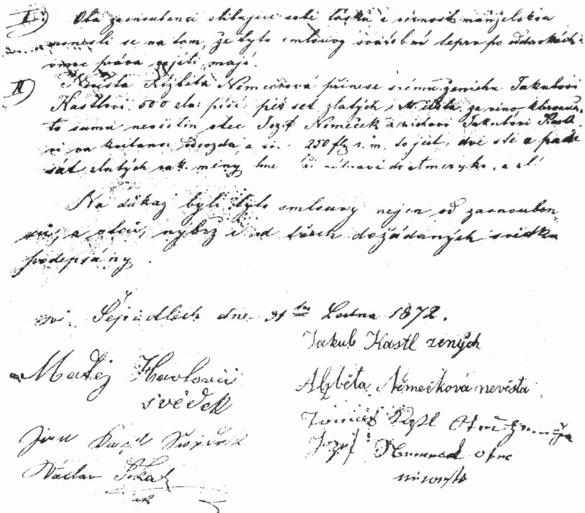
Not captioned in the book.
What it shows
Reproduction of the second part of the handwritten Czech marriage contract (articles I and II, closing clause, place/date line 'v Lepadlech ... 1872' and signatures of groom, bride, fathers and witnesses); continues the document begun on the previous page.
Not captioned in the book.
Decorative printer's ornament (symmetrical scrolled acanthus flourish) marking a section break in the left column.
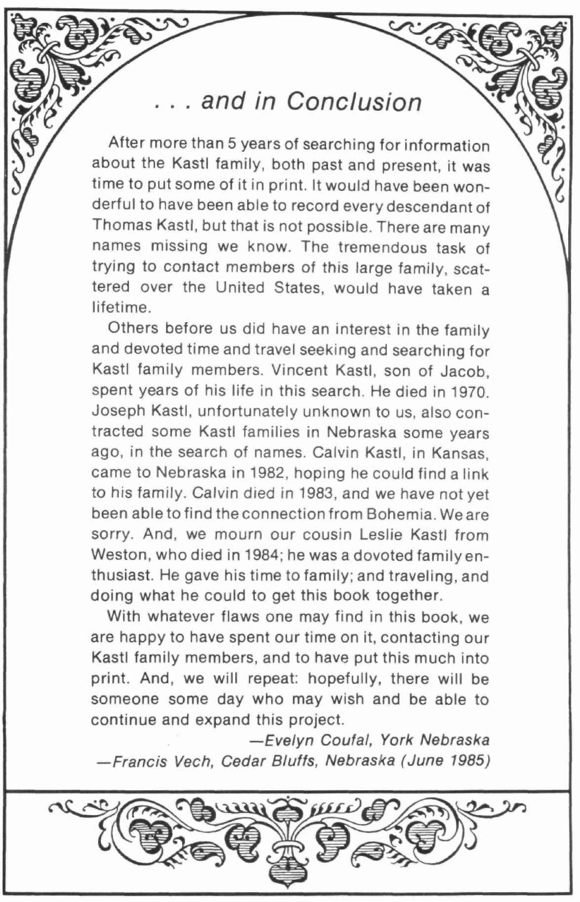
Not captioned in the book.
What it shows
Decorative frame enclosing the text: rectangular ruled border with an arched top, ornate scrolled foliage in the two upper corners, and a wide symmetrical scrollwork band at the bottom.
The Union Pacific shipping points were, successsively, Schuyler, Kearney, and Ogallala. Here the steers were driven up chutes into cattle cars which conveyed them to packers in Omaha and Chicago. (Photo from Nebraska—A Pictorial History)
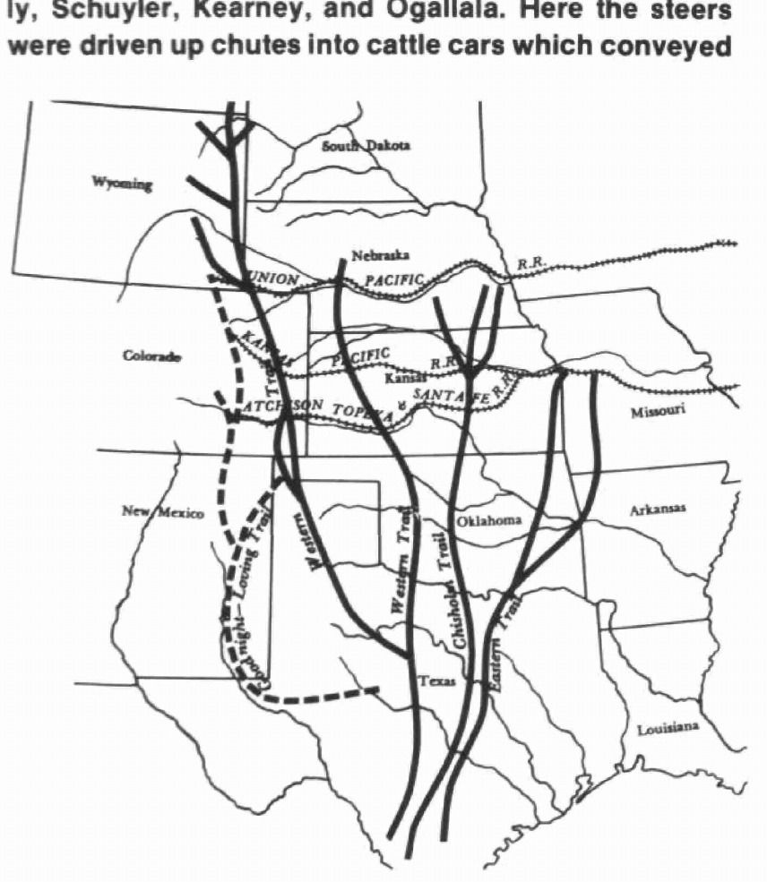
As homesteaders moved out on the plains, the cattle trails were pushed westward. The days of the Long Drive came to an end in the mid-1880s when expanding settlement blocked the trails and homesteaders invoked herd laws to keep the cattle out.
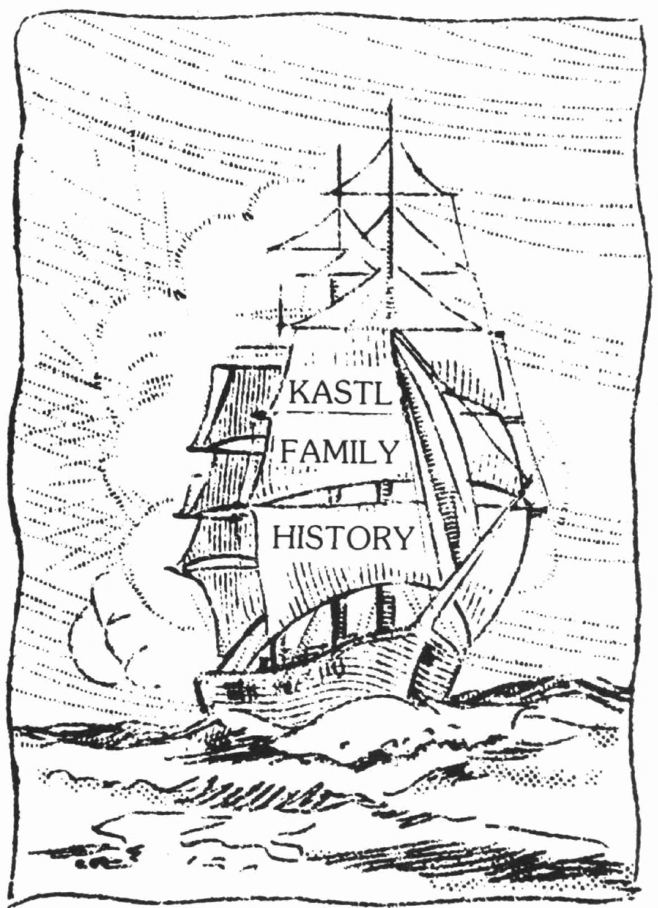
Not captioned in the book.
What it shows
Pen-and-ink drawing of a three-masted sailing ship on rough seas; the words KASTL / FAMILY / HISTORY are lettered on its sails (same ship illustration as the book's cover).